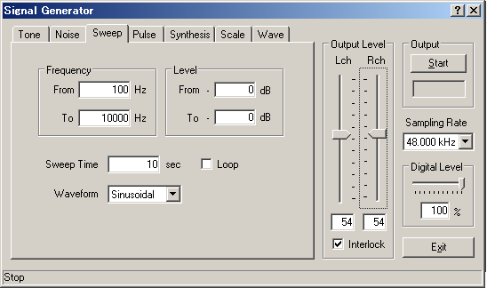

DSSF3 > RA > Reference Manual > Signal Generator

| Item | Description | |
|---|---|---|
| Frequency | From To |
The frequency sweep is generated from the frequency inputted in the [From] to the frequency inputted in the [To]. This is the logarithmic sweep, of which the frequency increases with a fixed rate of octave change per time. It means that the energy is constant within octave bands and it decreases at 3dB/oct. |
| Level | From To |
The start level and end level of a sweep are set up. |
| Sweep Time | Sweep Rate [octave/sec]. | |
| Loop | Normally, a sweep signal is outputted only once. If [Loop] is checked, the output is repeated. | |
| Waveform | Select the waveform of output sound. | |
DSSF3 > RA > Reference Manual > Signal Generator